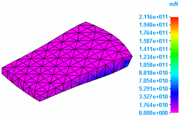
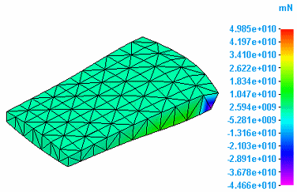
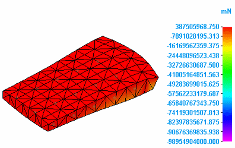
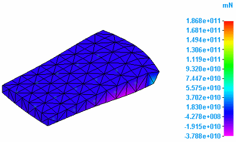
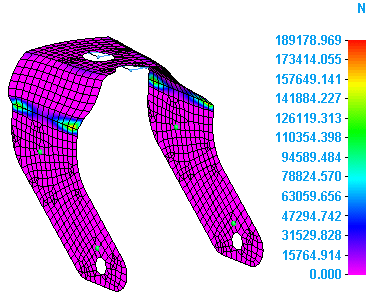
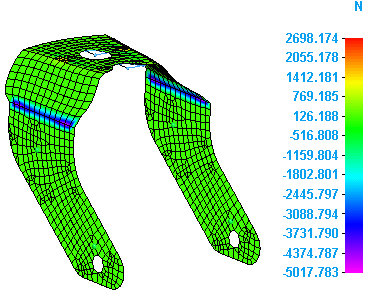
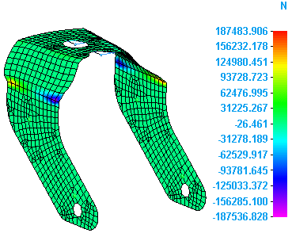
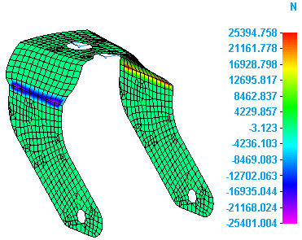

Constraint component plots
When you select Constraint Force from the Result Type list in the Data Selection group, you can review the simulation results in any of the following constraint component plots:
-
Constraint force data plots
-
Constraint moment data plots
Constraint force data plots
Constraint force data plots show the effect on part geometry of a force implied by a constraint. Select the following constraint force data types from the Result Component list in the Data Selection group:
The T1, T2, and T3 components are equivalent to the X, Y and Z axes in Solid Edge.
-
Total Constraint Force—

-
T1 Constraint Force

-
T2 Constraint Force

-
T3 Constraint Force

Constraint moment data plots
You can plot the effect on part geometry of a moment implied by a constraint. Select the following constraint moment data types from the Result Component list in the Data Selection group:
-
Total Constraint Moment

-
R1 Constraint Moment

-
R2 Constraint Moment

-
R3 Constraint Moment

How do I
Plot resultsLearn more
Plotting resultsResult plots for mixed mesh models
Displacement component plots
Stress component plots
Strain component plots
Beam properties
Beam reaction component plots
Beam stress component plots
Beam diagrams
Temperature plots
Heat flux component plots
Applied temperature plots